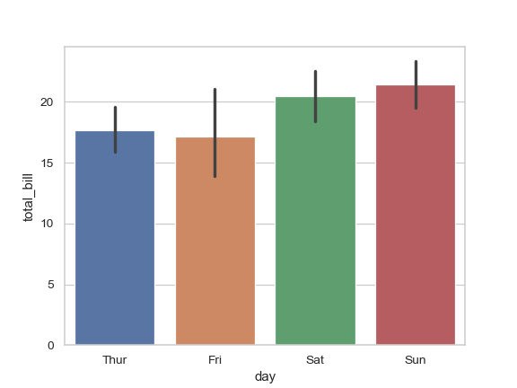
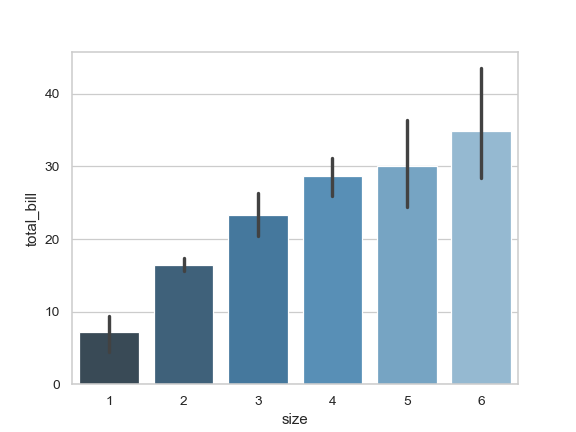
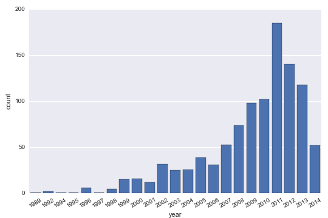

Seaborn
import seaborn as sns
Bar Plot
Source seaborn
sns.set(style="whitegrid")
tips = sns.load_dataset("tips")
ax = sns.barplot(x="day", y="total_bill", data=tips)

ax = sns.barplot(x="day", y="total_bill", hue="sex", data=tips)

ax = sns.barplot(x="day", y="tip", data=tips, capsize=.2)

ax = sns.barplot("size", y="total_bill", data=tips,
palette="Blues_d")

Heatmap
ax = sns.heatmap(A_V_A)
Axes and Plot Options
Source drawingfromdata
Rotate Axes
import seaborn as sns
planets = sns.load_dataset("planets")
g = sns.factorplot("year", data=planets, aspect=1.5, kind="count", color="b")
g.set_xticklabels(rotation=30)
